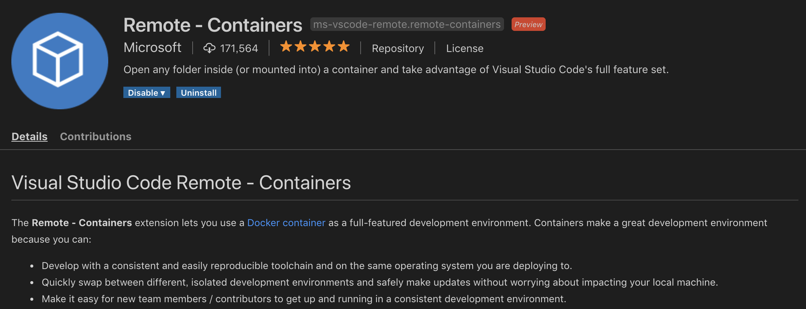
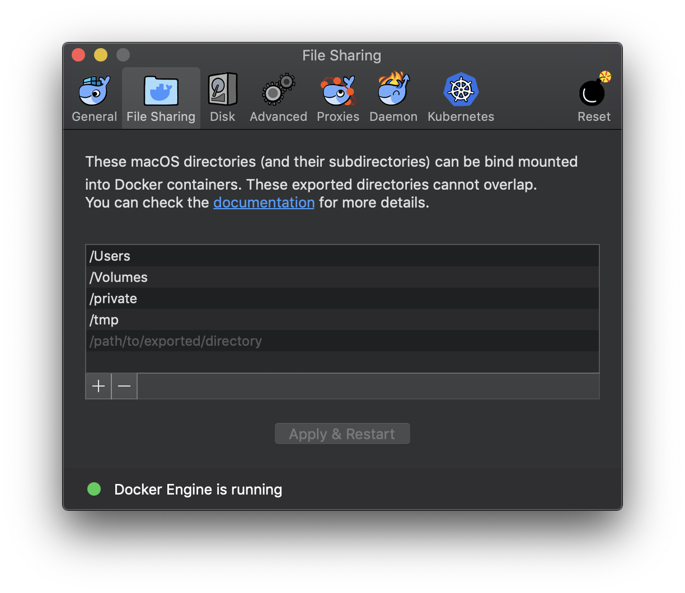
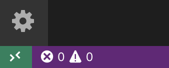
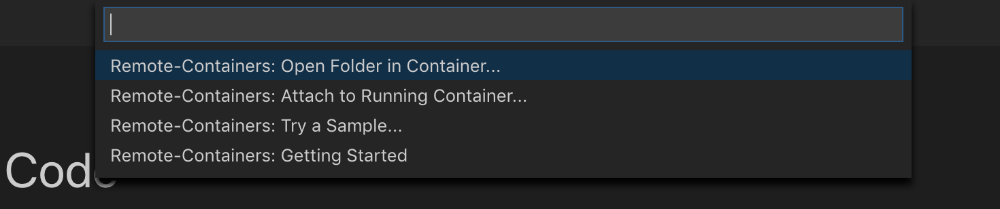
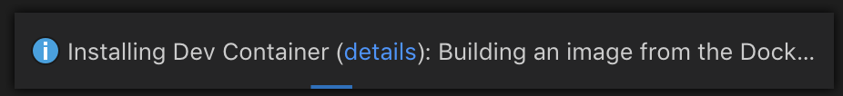
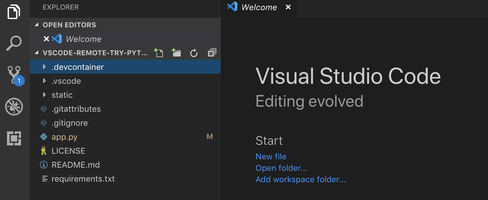
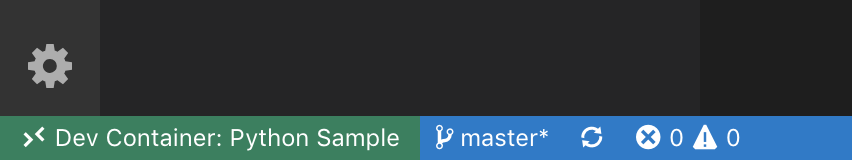
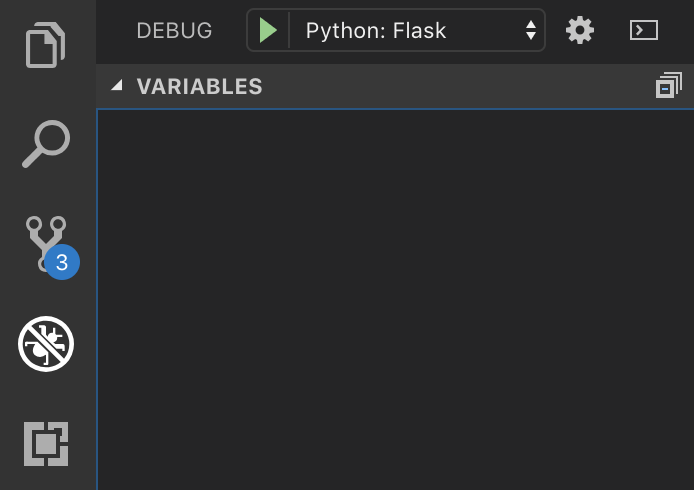
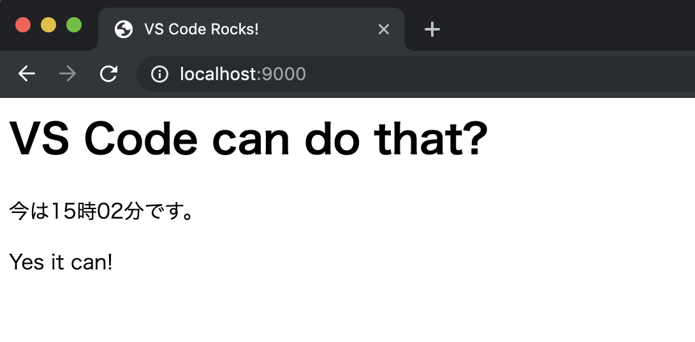
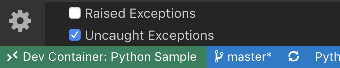

VS CodeでDockerコンテナーのPython開発環境にリモート接続する
はじめに
Visual Studio Code（以下、vscode）を使って、Dockerのコンテナー上にある開発環境へリモートで接続します。このとき、ptvsdではなく、vscodeの拡張機能であるRemoteを用いて接続します。
環境構築
環境
- macOS Mojave 10.14.5
- Docker version 18.09.2
- Visual Studio Code version 1.35
拡張機能
まずは何はなくとも下記の拡張機能をインストールします。

RemoteはまだvscodeのInsider版でしか動作しなかった・・・のですが、6月6日にStable版でも対応しました。
接続手順
基本的な手順はここにあるものを参考にしています。
Dockerアイコンをクリックして、メニュー中の「Preferences」をクリック。「File Sharing」を選択して、共有したいディレクトリが設定されているか確認する。

Dockerのメニュー中にPreferencesがあるはずなので、これをクリック。

表示されたディレクトリのうち、共有したいディレクトリが設定されていることを確認しておきます。
任意のコンテナーを準備します。今回はPython用のサンプルプロジェクトをmicrosoftが準備しているので、これをcloneしました。
~/devp git clone https://github.com/microsoft/vscode-remote-try-python.git Cloning into 'vscode-remote-try-python'... remote: Enumerating objects: 94, done. remote: Counting objects: 100% (94/94), done. remote: Compressing objects: 100% (70/70), done. remote: Total 94 (delta 47), reused 51 (delta 18), pack-reused 0 Unpacking objects: 100% (94/94), done.ちなみにGolang用やいろんな言語があったりします。
ただし、現在（2019年5月30日）のところAlpine LinuxやWindowsベースのコンテナーはサポート外とのこと。
Note: Alpine Linux and Windows based dev containers are not currently supported.
cloneした資産を拡張機能のRemoteで開きます。
vscodeを起動します。起動したら、vscodeの左下にある「><」みたいな部分をクリックします。このとき、先ほどcloneしたディレクトリを開く必要はありません。

すると、vscode上部に4つほどコマンドがリストで表示されます。その中から
Remote-Containers: Open Folder in Container...を選択します。
ディレクトリを選択するダイアログが表示されるので、先ほどcloneしたディレクトリを選択します。
ディレクトリを選択すると、画面がリロードされます。このとき、初回起動でコンテナーが存在していない場合はvscodeが自動的に生成します。しばらく待って、右下の「処理中」メッセージが消えたら準備完了です。

とりあえずこの時点で、パッと見はあまり普段と変化は感じられませんが・・・。

左下の部分を見ると「Dev Container: Python Sample」と表示されており、コンテナーに接続していることがわかります。

この状態でターミナルを起動し
docker psしてみると、下記のようにコンテナーが起動していることがわかります。~ ❯❯❯ docker ps CONTAINER ID IMAGE COMMAND CREATED STATUS PORTS NAMES 3afa6cb8f1e2 vsc-vscode-remote-try-python-f50dab769712249e3a925e9d880f74de "/bin/sh -c 'echo Co…" 6 minutes ago Up 6 minutes 127.0.0.1:9000->9000/tcp nervous_diracこんな手順を踏めば、Dockerのコンテナー上で動作している開発環境にvscodeで接続できます。
デバッグしてみる
とりあえず接続はできたわけなので、今度は実際に動作確認とデバッグをしてみます。
コンテナーに接続しているvscode上でTERMINALタブを開きます。まずは、プロンプトが接続先のコンテナーであることを確認します。
root@3afa6cb8f1e2:/workspaces/vscode-remote-try-python# uname
Linux本来、macOSのターミナルでunameを実行した場合は「Darwin」と返ってくるので、「Linux」と返ってくるならmacOSのそれではなくコンテナー上のプロンプトであると判断できます。
ここでデバッグが可能か確認するために、app.pyのソースで任意の行にブレークポイントを設定します。ちなみに、vscodeのデバッグメニューを見てみるとFlaskで設定済みだったりします。これはclone元ですでにlaunch.jsonが作成済みだからです。親切！

この状態でF5キーを押します。あるいはデバッグメニューから「Start Debugging」をクリックします。すると、コンテナーのプロンプトでPythonが実行され、下記のようなメッセージが表示されてFlaskが起動します。
※実行コマンドは省略
* Serving Flask app "app.py"
* Environment: development
* Debug mode: off
* Running on http://0.0.0.0:9000/ (Press CTRL+C to quit)ブラウザを起動してローカルホストに9000ポートで接続します。この際、先ほど設定したブレークポイントで処理が一時的に停止するはずです。この状態で、ローカルで開発しているときと同様に変数値のチェックなどができます。vscodeはコンテナーにリモート接続していますが、それを意識することなく普段どおりの使い方が可能であるわけです。
ブレークポイントで停止している処理を続行してやれば、ブラウザがwebページを表示します。

これで動作確認とデバッグができました。
なお、実行を止めたい場合はいつもどおりShift + F5を押せば止まります。
ちなみに、vscodeを終了するとコンテナーは自動的に停止します。docker psで確認すると表示されなくなっているはずです。
コンテナー設定を変更したらリビルドする
コンテナーの設定を変更した場合は、vscodeの左下をクリックしてコマンドの一覧を表示します。

表示された一覧の中からRemote Containers: Rebuild Containerを選択します。

画面がリロードされてコンテナーが再度ビルドされます。ビルドが終了すれば普段通りコンテナーを利用できます。
まとめ
Dockerをインストールして、vscodeを導入し拡張機能のRemoteをインストールすれば、あとは欲しい環境をコンテナーで用意するだけで開発環境が揃います。ローカルに開発のための環境を用意する必要がないので、下手にローカル環境を汚すこともなくなります。
ベタなセリフですが、すごい時代になったものです、ホントに。